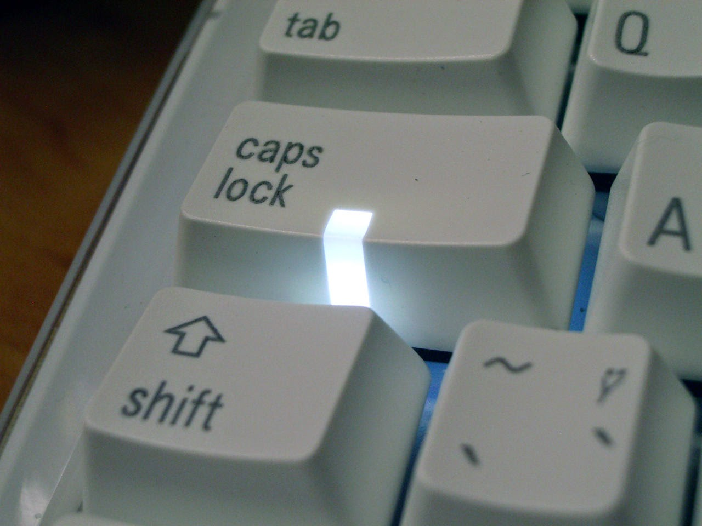

La tecla más inútil de nuestro teclado es irónicamente una de las teclas de más fácil acceso, ¿no es eso algo ridículo?
No solamente está su gran inutilidad, sino además puede llegar a ser molesta de forma pro-activa cuando la tocamos sin querer y nuestro texto termina siendo un GRITO MUY IRRITANTE.
Pero no podemos sentarnos y conformarnos, o mucho peor! Sentarnos y sufrir en silencio, algo habrá que hacer al respecto. Así que pasemos a convertir la tecla más inútil en una tecla realmente útil y aprovechemos su conveniente posición en el teclado a nuestro favor!
Como ya había mencionado en la entrada: “El teclado es tu amigo” la tecla Caps Lock fue originalmente la, mucho más conveniente, tecla Control, pero aquellos días se fueron y hoy tenemos lo que tenemos…
Como he mencionado antes el reemplazo perfecto para el “Caps Lock” es justamente la tecla “Control”, pero aún podemos ir un poco más allá.
La idea es usar la tecla Caps Lock simultáneamente como Control Y Escape. Así al mantener Caps Lock presionada y pulsar otra tecla, esta actúa como modificador, pero al dar un solo toque a la tecla Caps Lock actúa como Escape, ¿no es eso grandioso?
Si no le ves la utilidad aún, probablemente eres el usuario al que le bastará usar Caps Lock como Control sin más, pero si para ahora tus ojos han empezado a brillar y tus pupilas se han dilatado, posiblemente eres usuario de software como VIM por ejemplo.
Para lograr este milagro modificaremos nuestro ~/.xinitrc. Agregaremos las siguientes 2 lineas:
setxkbmap -option ctrl:swapcaps
xcape -e 'Control_L=Escape'La primera linea logra el cometido de intercambiar la tecla Control izquierda con Caps lock (con lo cual aún tendremos la funcionalidad de Caps Lock pero en la tecla Control izquierda). En la segunda linea echamos mano del grandioso xcape, que se encargará de dar la funcionalidad de Escape a nuestra nueva tecla Control.
Que disfrutes de tus nuevos super poderes al teclado, Happy Hacking.